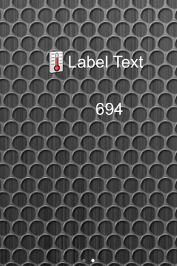
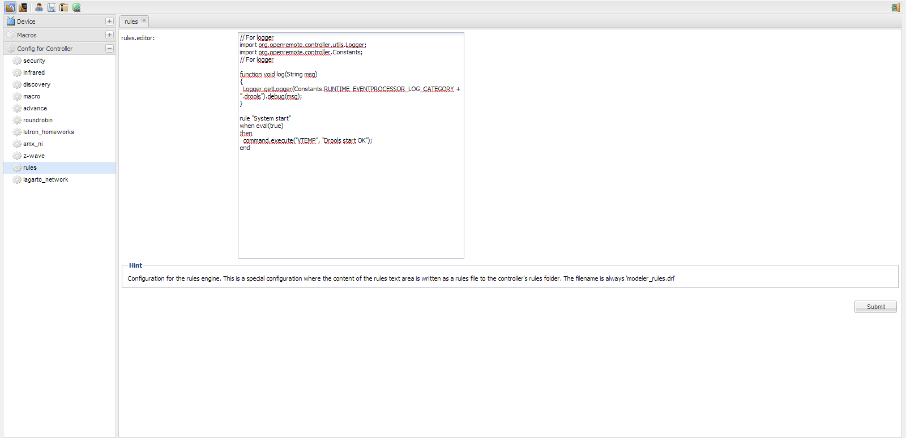

Hello, sorry again for my english...
My config is IPX800-V3, sensor temperature SHT-X3 and OpenRemote.
I want to display the temperature on a label. I read the value in "status.xml".
The problem is that this value is an analog value and not a temperature value.
Is it possible to do a rule which convert this analog value in temperature value?
Exemple: the analog value is 686 and the real temperature is 18°C
Convert: (686-506)/10 = 18
And after, I want to write this temerature value in a label.
Can you help me to do the rule, please.
Thank you very much.
Guillaume
{kind=link}
{kind=link}
{kind=link}
{kind=link}
{kind=link}
{kind=link}
{kind=link}
![IMG_0778[1].PNG](attachments/22881142/23036318.png){kind=link}
{kind=link}
{kind=link}
|
Have a look at Michal Rutka's calibration example |
|
Thank you PIETER ZANSTRA for your answer. I try this and I'll let you know. |
|
I have try your solution, but I'm novice in OpenRemote, and I can't get it to work... I have a command "Température" I have a command "VTEMP" I have a sensor "Sonde température" I have the rule "Correct Température" rule "Correct Température" when CustomState(source=="Température", $v: value) then double correctedValue = Double.parseDouble($v.toString()) - 2.5; double fahrenheit = (correctedValue*9) / 5 + 32; execute.command("VTEMP", String.format("%.1f \u2103 / %.1f \u2109", correctedValue, fahrenheit)); end And to finish, I have a label I hope you understand what I have do. |
|
You need 2 changes: 1. "Sonde température" sensor should be linked to the command "Température"
CustomState(source=="Sonde température", $v: value)
Furthermore, if you want to show VTEMP in a label then you need a new custom sensor using command "VTEMP", and use this sensor in UI label. |
|
Quick response: |
|
Normaly, if I don't write the unit, it's automatic in ms. |
|
1. I have linked "Sonde température" to the command "Température" 2. I have modify the rule: rule "Correct Température" when CustomState(source=="Sonde température", $v: value) then double correctedValue = Double.parseDouble($v.toString()) - 2.5; double fahrenheit = (correctedValue*9) / 5 + 32; execute.command("VTEMP", String.format("%.1f \u2103 / %.1f \u2109", correctedValue, fahrenheit)); end 3. I have create a new sensor "VTEMP Sensor" and linked whit VTEMP 4. and to finish, I have use this sensor in UI label I have save and upload, but the result in the label is "Label Text"... |
|
You're right! |
|
It seems OK on the first look. Things to check: 1. Make a label and link it to "Sonde température" to be sure that reading of the xml file is OK. |
|
1. I have make a new label, and linked with "Sonde température" and it's OK  2. I have renamemy sensor, but the problem it's the same. Is it possible to view the status of the variables in the rule? |
|
Are you sure it's this for "VTEMP"? |
|
You need to make sure that your rule file is parsed without errors. Please take a look at OR/logs/boot.log file and check if there are no errors when starting drools.
Not exactly, but you can generate logs for drools execution which would make debugging easier. Check this thread for it http://www.openremote.org/display/forums/Drools+rule+activation+feedback?focusedCommentId=22879252#comment-22879252 With this build you can also easily add custom entries to the log like this: // For logger import org.openremote.controller.utils.Logger; import org.openremote.controller.Constants; // For logger function void log(String msg) { Logger.getLogger(Constants.RUNTIME_EVENTPROCESSOR_LOG_CATEGORY + ".drools").debug(msg); } rule "System start" when eval(true) then log("Drools start OK"); end Alternatively you can simply write each variable to the virtual command linked to sensor linked to label. So to see drools start OK status in your UI: rule "System start" when eval(true) then execute.command("VTEMP", "Drools start OK"); end |
Yes. |
|
Thank you for your help. I wait your answer, but it's finish for me for today, I can start. I will continue last week. Good weekend for you. This is the result in the log file: INFO 2013-12-13 15:24:51,453 : -------------------------------------------------------------------- UNDEPLOYING CURRENT CONTROLLER RUNTIME... -------------------------------------------------------------------- INFO 2013-12-13 15:24:51,453 : Stopped event processor : Drools Rule Engine INFO 2013-12-13 15:24:51,480 : Stopped event processor : RRD4J Data Logger INFO 2013-12-13 15:24:51,480 : Stopped event processor : EmonCMS Data Logger INFO 2013-12-13 15:24:51,480 : Shutdown complete. INFO 2013-12-13 15:24:51,482 : -------------------------------------------------------------------- DEPLOYING NEW CONTROLLER RUNTIME... -------------------------------------------------------------------- ERROR 2013-12-13 15:24:51,578 : Rule definition 'modeler_rules.drl' could not be deployed. See errors below. ERROR 2013-12-13 15:24:51,578 : Rule Compilation error command cannot be resolved ERROR 2013-12-13 15:24:51,578 : There was an error parsing the rule definition 'modeler_rules.drl' : Could not parse knowledge. java.lang.IllegalArgumentException: Could not parse knowledge. at org.drools.builder.impl.KnowledgeBuilderImpl.newKnowledgeBase(KnowledgeBuilderImpl.java:58) at org.openremote.controller.statuscache.rules.RuleEngine.getValidKnowledgePackages(RuleEngine.java:532) at org.openremote.controller.statuscache.rules.RuleEngine.start(RuleEngine.java:253) at org.openremote.controller.statuscache.EventProcessorChain.start(EventProcessorChain.java:112) at org.openremote.controller.statuscache.StatusCache.start(StatusCache.java:120) at org.openremote.controller.deployer.Version20ModelBuilder.buildSensorModel(Version20ModelBuilder.java:659) at org.openremote.controller.deployer.Version20ModelBuilder.build(Version20ModelBuilder.java:557) at org.openremote.controller.deployer.AbstractModelBuilder.buildModel(AbstractModelBuilder.java:154) at org.openremote.controller.service.Deployer.startup(Deployer.java:858) at org.openremote.controller.service.Deployer.softRestart(Deployer.java:440) at org.openremote.controller.service.Deployer$ControllerDefinitionWatch.run(Deployer.java:1324) at java.lang.Thread.run(Thread.java:662) INFO 2013-12-13 15:24:51,581 : Initialized event processor : Drools Rule Engine INFO 2013-12-13 15:24:51,589 : Initialized event processor : RRD4J Data Logger INFO 2013-12-13 15:24:51,589 : Initialized event processor : EmonCMS Data Logger INFO 2013-12-13 15:24:51,592 : Registered sensor : Sensor (Name = 'Délestage total SENSOR', ID = '100', State Mappings: {1=ON, 0=OFF}) INFO 2013-12-13 15:24:51,592 : Registered sensor : Sensor (Name = 'VTEMP Sensor', ID = '101', State Mappings: {}) INFO 2013-12-13 15:24:51,592 : Registered sensor : Sensor (Name = 'Délestage partiel SENSOR', ID = '98', State Mappings: {1=ON, 0=OFF}) INFO 2013-12-13 15:24:51,593 : Registered sensor : Sensor (Name = 'Sonde temperature', ID = '99', State Mappings: {}) INFO 2013-12-13 15:24:51,596 : Startup complete. |
|
So you have a compilation error and your rule file is not executing. If you are unable to spot and fix it then send your WHOLE rule file. I can take a look if it is not too large. |
|
The In-memory Virtual Cammands can be either on, off or status. I don't know if it is case sensitive. In OpenRemote I always use the lower case variants of these "words" |
|
Actualy, in rules editor, I have just what you gave me. // For logger import org.openremote.controller.utils.Logger; import org.openremote.controller.Constants; // For logger function void log(String msg) { Logger.getLogger(Constants.RUNTIME_EVENTPROCESSOR_LOG_CATEGORY + ".drools").debug(msg); } rule "System start" when eval(true) then command.execute("VTEMP", "Drools start OK"); end  |
|
Add these to begin of the file:
package org.openremote.controller.protocol;
global org.openremote.controller.statuscache.CommandFacade execute;
|
|
Hello, I'm back, and I have make a new test. package org.openremote.controller.protocol; global org.openremote.controller.statuscache.CommandFacade execute; // For logger import org.openremote.controller.utils.Logger; import org.openremote.controller.Constants; // For logger function void log(String msg) { Logger.getLogger(Constants.RUNTIME_EVENTPROCESSOR_LOG_CATEGORY + ".drools").debug(msg); } rule "System start" when eval(true) then command.execute("VTEMP", "Drools start OK"); end And in the log file: -------------------------------------------------------------------- DEPLOYING NEW CONTROLLER RUNTIME... -------------------------------------------------------------------- ERROR 2013-12-19 17:34:29,079 : Rule definition 'modeler_rules.drl' could not be deployed. See errors below. ERROR 2013-12-19 17:34:29,079 : Rule Compilation error command cannot be resolved ERROR 2013-12-19 17:34:29,080 : There was an error parsing the rule definition 'modeler_rules.drl' : Could not parse knowledge. java.lang.IllegalArgumentException: Could not parse knowledge. at org.drools.builder.impl.KnowledgeBuilderImpl.newKnowledgeBase(KnowledgeBuilderImpl.java:58) at org.openremote.controller.statuscache.rules.RuleEngine.getValidKnowledgePackages(RuleEngine.java:532) at org.openremote.controller.statuscache.rules.RuleEngine.start(RuleEngine.java:253) at org.openremote.controller.statuscache.EventProcessorChain.start(EventProcessorChain.java:112) at org.openremote.controller.statuscache.StatusCache.start(StatusCache.java:120) at org.openremote.controller.deployer.Version20ModelBuilder.buildSensorModel(Version20ModelBuilder.java:659) at org.openremote.controller.deployer.Version20ModelBuilder.build(Version20ModelBuilder.java:557) at org.openremote.controller.deployer.AbstractModelBuilder.buildModel(AbstractModelBuilder.java:154) at org.openremote.controller.service.Deployer.startup(Deployer.java:858) at org.openremote.controller.service.Deployer.softRestart(Deployer.java:440) at org.openremote.controller.service.Deployer$ControllerDefinitionWatch.run(Deployer.java:1324) at java.lang.Thread.run(Thread.java:662) INFO 2013-12-19 17:34:29,085 : Initialized event processor : Drools Rule Engine INFO 2013-12-19 17:34:29,099 : Initialized event processor : RRD4J Data Logger INFO 2013-12-19 17:34:29,099 : Initialized event processor : EmonCMS Data Logger INFO 2013-12-19 17:34:29,106 : Registered sensor : Sensor (Name = 'Délestage total SENSOR', ID = '100', State Mappings: {1=ON, 0=OFF}) INFO 2013-12-19 17:34:29,106 : Registered sensor : Sensor (Name = 'VTEMP Sensor', ID = '101', State Mappings: {}) INFO 2013-12-19 17:34:29,110 : Registered sensor : Sensor (Name = 'Délestage partiel SENSOR', ID = '98', State Mappings: {1=ON, 0=OFF}) INFO 2013-12-19 17:34:29,111 : Registered sensor : Sensor (Name = 'Sonde temperature', ID = '99', State Mappings: {}) INFO 2013-12-19 17:34:29,115 : Startup complete. |
|
Change |
|
I have modify "command.execute" by "execute.command" and this is the result: --------------------------------------------------------------------
DEPLOYING NEW CONTROLLER RUNTIME...
--------------------------------------------------------------------
INFO 2013-12-19 18:23:54,850 : Initialized event processor : Drools Rule Engine
INFO 2013-12-19 18:23:54,857 : Initialized event processor : RRD4J Data Logger
INFO 2013-12-19 18:23:54,858 : Initialized event processor : EmonCMS Data Logger
INFO 2013-12-19 18:23:54,860 : Registered sensor : Sensor (Name = 'Délestage total SENSOR', ID = '100', State Mappings: {1=ON, 0=OFF})
INFO 2013-12-19 18:23:54,861 : Registered sensor : Sensor (Name = 'VTEMP Sensor', ID = '101', State Mappings: {})
INFO 2013-12-19 18:23:54,861 : Registered sensor : Sensor (Name = 'Délestage partiel SENSOR', ID = '98', State Mappings: {1=ON, 0=OFF})
INFO 2013-12-19 18:23:54,861 : Registered sensor : Sensor (Name = 'Sonde temperature', ID = '99', State Mappings: {})
INFO 2013-12-19 18:23:54,864 : Startup complete.
And I have "Drools start OK" on my iphone screen. |
|
Now, I have modify my rule to view room temperature. package org.openremote.controller.protocol; global org.openremote.controller.statuscache.CommandFacade execute; // For logger import org.openremote.controller.utils.Logger; import org.openremote.controller.Constants; // For logger function void log(String msg) { Logger.getLogger(Constants.RUNTIME_EVENTPROCESSOR_LOG_CATEGORY + ".drools").debug(msg); } rule "System start" when eval(true) then execute.command("VTEMP", "Drools start OK"); end rule "Correct Temperature" when CustomState(source=="Sonde temperature", $v: value) then double correctedValue = Double.parseDouble($v.toString()) - 2.5; double fahrenheit = (correctedValue*9) / 5 + 32; execute.command("VTEMP", String.format("%.1f \u2103 / %.1f \u2109", correctedValue, fahrenheit)); end And this is the report: ERROR 2013-12-20 13:14:45,632 : Rule definition 'modeler_rules.drl' could not be deployed. See errors below. ERROR 2013-12-20 13:14:45,632 : Unable to resolve ObjectType 'CustomState' ERROR 2013-12-20 13:14:45,632 : Rule Compilation error $v cannot be resolved ERROR 2013-12-20 13:14:45,633 : There was an error parsing the rule definition 'modeler_rules.drl' : Could not parse knowledge. java.lang.IllegalArgumentException: Could not parse knowledge. at org.drools.builder.impl.KnowledgeBuilderImpl.newKnowledgeBase(KnowledgeBuilderImpl.java:58) at org.openremote.controller.statuscache.rules.RuleEngine.getValidKnowledgePackages(RuleEngine.java:532) at org.openremote.controller.statuscache.rules.RuleEngine.start(RuleEngine.java:253) at org.openremote.controller.statuscache.EventProcessorChain.start(EventProcessorChain.java:112) at org.openremote.controller.statuscache.StatusCache.start(StatusCache.java:120) at org.openremote.controller.deployer.Version20ModelBuilder.buildSensorModel(Version20ModelBuilder.java:659) at org.openremote.controller.deployer.Version20ModelBuilder.build(Version20ModelBuilder.java:557) at org.openremote.controller.deployer.AbstractModelBuilder.buildModel(AbstractModelBuilder.java:154) at org.openremote.controller.service.Deployer.startup(Deployer.java:858) at org.openremote.controller.service.Deployer.softRestart(Deployer.java:440) at org.openremote.controller.service.Deployer$ControllerDefinitionWatch.run(Deployer.java:1324) at java.lang.Thread.run(Thread.java:662) INFO 2013-12-20 13:14:45,636 : Initialized event processor : Drools Rule Engine INFO 2013-12-20 13:14:45,644 : Initialized event processor : RRD4J Data Logger INFO 2013-12-20 13:14:45,644 : Initialized event processor : EmonCMS Data Logger INFO 2013-12-20 13:14:45,646 : Registered sensor : Sensor (Name = 'Délestage total SENSOR', ID = '100', State Mappings: {1=ON, 0=OFF}) INFO 2013-12-20 13:14:45,647 : Registered sensor : Sensor (Name = 'VTEMP Sensor', ID = '101', State Mappings: {}) INFO 2013-12-20 13:14:45,647 : Registered sensor : Sensor (Name = 'Délestage partiel SENSOR', ID = '98', State Mappings: {1=ON, 0=OFF}) INFO 2013-12-20 13:14:45,649 : Registered sensor : Sensor (Name = 'Sonde temperature', ID = '99', State Mappings: {}) INFO 2013-12-20 13:14:45,650 : Startup complete. I think, the problem is "CustomState", but I start programming, and I do not see the problem. |
|
add this to your imports:
import org.openremote.controller.model.event.*
The language is Java 1.6. |
|
Perfect Michal Rutka... package org.openremote.controller.protocol; global org.openremote.controller.statuscache.CommandFacade execute; // For logger import org.openremote.controller.utils.Logger; import org.openremote.controller.Constants; import org.openremote.controller.model.event.* // For logger function void log(String msg) { Logger.getLogger(Constants.RUNTIME_EVENTPROCESSOR_LOG_CATEGORY + ".drools").debug(msg); } rule "Correct Temperature" when CustomState(source=="Sonde temperature", $v: value) then double correctedValue = (Double.parseDouble($v.toString()) - 506)/10; double fahrenheit = (correctedValue*9) / 5 + 32; execute.command("VTEMP", String.format("%.1f \u2103 / %.1f \u2109", correctedValue, fahrenheit)); end |
|
A last question (I hope), My new rules: package org.openremote.controller.protocol; global org.openremote.controller.statuscache.CommandFacade execute; // For logger import org.openremote.controller.utils.Logger; import org.openremote.controller.Constants; import org.openremote.controller.model.event.* // For logger function void log(String msg) { Logger.getLogger(Constants.RUNTIME_EVENTPROCESSOR_LOG_CATEGORY + ".drools").debug(msg); } rule "Correct Temperature" when CustomState(source=="Sonde temperature", $v: value) then double correctedValue = (Double.parseDouble($v.toString())-506)/10; execute.command("VTEMP", String.format("%.1f \u2103", correctedValue)); end rule "Correct Luminosite" when CustomState(source=="Sonde luminosite", $v: value) then double correctedLumValue = Double.parseDouble($v.toString())/10; execute.command("VLUM", String.format("%.1f \u2103", correctedLumValue)); end rule "Correct hygrometrie" when CustomState(source=="Sonde hygrometrie", $v: value) then double correctedHyValue = Double.parseDouble($v.toString())/10; execute.command("VHYG", String.format("%.1f \u2103", correctedHyValue)); end |